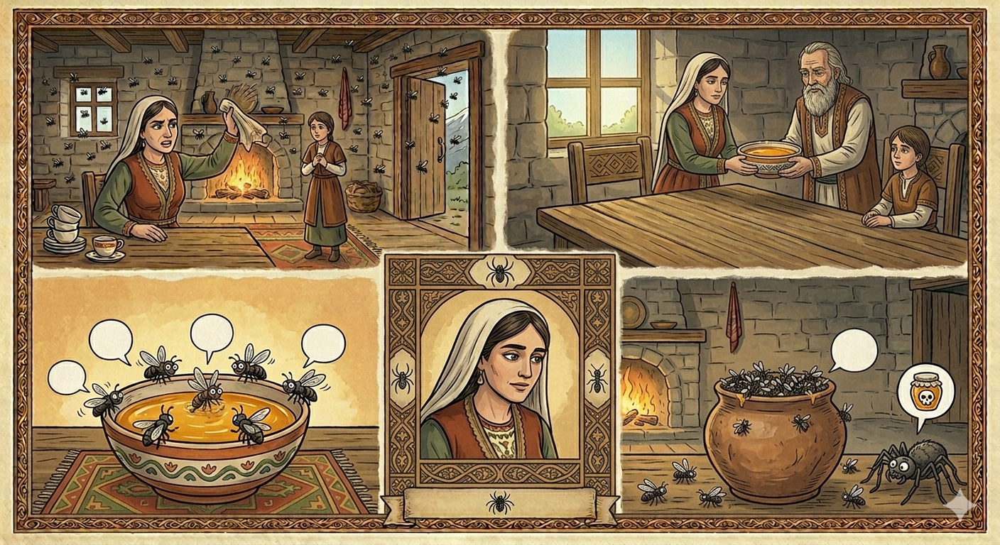

И.А. Дахкильгов. Хьехаме дувцарш - поучительные рассказы-притчи.
И.А. Дахкильгов. Хьехаме дувцарш - поучительные рассказы-притчи. Из ингушского фольклора.

Мозашта хиннар
Цхьан цӀагӀа дукха мозий хьайзад. Уж хӀалакде дага йолаш, фусам-нанас цхьа кадакӀиг оттабаьб, чу модз а диллад. - Хьадувла! Вай фусам-нана дика хиннай, вайна модз дуадеш я, - аьнна, мозий тӀакхийттад цу модза. Модз дуо-ош, цхьацца ког боалсаш, модзо дӀалувцаш, модзала керчаш, мозий хӀалакахиннад. ТӀаккха мара кхийттадац уж моастагӀчо луш долча модзах шоашта валар хулилга.
РУССКИЙ
Что стало с мухами
В некий дом налетело много мух. Надоели они хозяйке. Она поставила чашечку с медом. Мухи обрадовались: "Смотрите, какая гостеприимная наша хозяйка. Она нас медом угощает. Слетайтесь сюда!" Мухи жадно накинулись на мед. Лапка за лапкой стали они увязать в нем. Чем больше трепыхались, тем больше увязали. Только тогда они поняли, что мед, предложенный врагом, является гибельным.
ENGLISH
What happened to the flies
A swarm of flies descended on a certain house. They were getting on the landlady's nerves. So she set out a small bowl of honey. The flies were delighted. 'Look how hospitable our landlady is! She's treating us to honey! Come on over!" The flies eagerly pounced on the honey. But leg by leg, they began to get stuck in it. The more they fluttered around, the deeper they sank. It was only then that they realised the honey offered by the enemy was deadly.
НОХЧИЙН
Мозашна хилларг
Цхьана цӀен чохь дукха мозий хьаьвзина. Уьш хӀаллакдан дагахь йолуш, хӀусам-нанас цхьа кад хӀоттийна, чу моз а диллин. - Схьадуьйла! Вай хӀусам-нана дика хилла, вайна моз даадеш йу, - аьлла, мозий тӀекхетта цу мезан. Моз ду-уш, цхьацца ког чубоьдуш, мазо дӀалуьйцуш, мазал керчаш, мозий хӀаллакхилла. ТӀаккха бен кхетта дац уьш мостагӀчо луш долчу мазах шайна валар хулийла.
ПОГОВОРКИ
Боарамал совгӀа хьо хеставой, халахь хьа диканга сатувсилга. Если кто тебя хвалит безмерно, значит, ему что-то от тебя нужно. If someone praises you beyond measure, be sure they want something from you. Боарамал совнаха хестабахь, хьайх х1ума лаьара ду цуьнан.Во арадаьннача дика чудена моттиг яц. Еще не бывало, чтобы добро приходило туда, откуда выходит зло. Good has never come from where evil emerges. Вон долучохара дика ца до1у.Водаш яьр чет яц, воагӀаш яьр мара. Счет не тот, который мы предполагали, приступая к делу, а тот, который получился по завершении дела. The reckoning isn't the one you made setting out, but the one you get when the job is done. Волучохь баьллачу чоте бен, кхачарехь баьллачо тоьар ду.Говзача-ма шайтӀа а эшаду. Хитрец и шайтана надует. A clever man can even trick the devil himself. Говза стаго шайт1а а Ӏеха тарло.Кхалсаг хозача хабаро Ӏехаю. Красивые речи женщину обманывают. Pretty words deceive a woman. Хаза дийцарш зудчунна теша хуьлу.Мезала баха моза мел гӀертарах мезала чӀоагӀагӀа Ӏочубода. Попавшая в мед муха, чем больше бьется, тем больше увязает. The more a fly caught in honey struggles, the deeper it sinks. Мозах баьхьна мозагӀ дукхаг1а г1иртича, дукхаг1а чуйоду.Мезала баьлла Ӏаг мистача берхӀала Ӏеттача, баьттӀаб. Ложка, которая привыкла к меду, треснула, когда ее окунули в рассол. The spoon used to honey cracked when dipped into brine. Мозах Ӏамийна Ӏаьг ч1аьнгах йиллича яттелла.Модз долча када тӀа мозий дукха хувш. На чашке с медом много мух собирается. Flies gather in numbers around a bowl of honey. Мозах дузна када т1е мозий дукха хуьлу.Нокхарамозо а юв тох, ший мезага кхайдача. И пчела жалит, когда посягнут на ее мед. Even a bee will sting when someone reaches for its honey. Нокхармозо а йов тоху, шен мозага кхайкхинчунна.Пхьажбуарга пхьаж беза, нокхармоза модз деза. Навозному жуку нужен навоз, а пчеле – мед. The dung-beetle needs dung, the bee needs honey. Пхьаьжбаьрга пхьаьж оьшу, нокхармозана мозах оьшу.Цхьаволчун говза къамаьл чкъарий лувца зӀак санна да. Речь некоторых хитрецов подобна рыболовному крючку. The clever talk of certain schemers is like a fishing hook. Цхьаболчун говза къамел чк1ар лацу зевчал ду.Цхьан бӀехача тӀадамо меза бога бӀехдаьд. Капля грязи перепортила лохань меда. A single drop of filth spoiled a whole tub of honey. Цхьана бехачу тӀадамо мозах дузна баг1ана бехк даьккхина.